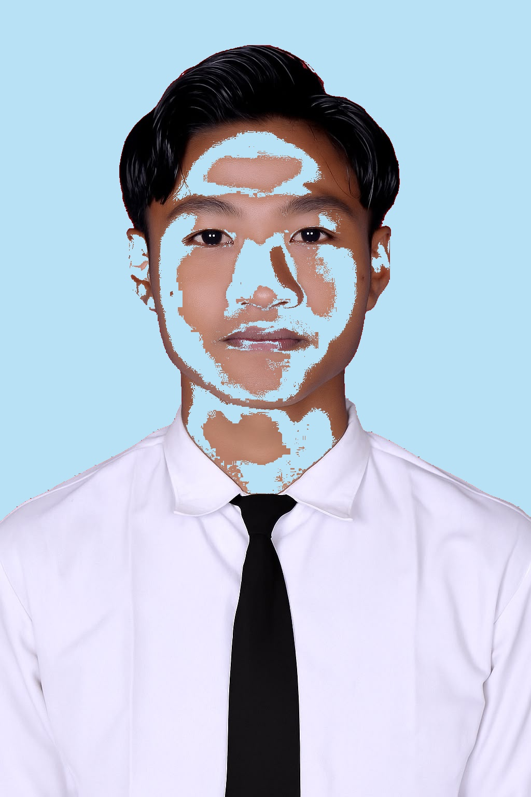

HALO, SAYA
Jahrul Qoiq Assyafi'i
Mahasiswa Informatika
Saya merupakan mahasiswa Universitas Jember, Fakultas Ilmu Komputer, Program Studi Informatika.
Saya sedang belajar pemrograman web, dan di luar itu saya juga aktif di olahraga badminton dan futsal.
Tentang Saya
Tentang Saya
Perkenalkan, saya Jahrul Qoiq Assyafi'i.
Saat ini saya sedang menempuh pendidikan di Universitas Jember, Fakultas Ilmu Komputer, Program Studi Informatika.
Saya masih belajar pemrograman web, mulai dari HTML, CSS, sampai JavaScript. Selain itu saya juga senang berkomunikasi dengan orang baru dan aktif dalam olahraga badminton serta futsal.
Data Diri
- Nama: Jahrul Qoiq Assyafi'i
- Universitas: Universitas Jember
- Fakultas: Ilmu Komputer
- Program Studi: Informatika
Pendidikan
Berikut merupakan jenjang pendidikan yang telah saya tempuh:
-
SDN 1 Tunjung Mekar
Tahun 2019 - Sekolah Dasar
-
SMP Muhammadiyah 14 Paciran
Tahun 2022 - Sekolah Menengah Pertama
-
SMA Negeri 1 Karangbinangun
Tahun 2025 - Sekolah Menengah Atas
-
Universitas Jember
Program Studi Informatika
Skills
Beberapa kemampuan yang sedang saya pelajari dan kembangkan:
- HTML
- CSS
- JavaScript
- Visual Studio Code
- Komunikasi
- Badminton
- Futsal
- Basket
- Otomotif
Hobi
Beberapa kegiatan yang saya sukai:
- Badminton
- Futsal
- Basket
- Otomotif
Portfolio dan Prestasi
-
Juara 4 Badminton Crossfaculty 2025
Salah satu prestasi yang pernah saya raih dalam bidang olahraga badminton adalah mendapatkan juara 4 dalam kompetisi Badminton Crossfaculty 2025.
-
Juara 2 Futsal Friendship 2025
Selain badminton, saya juga meraih juara 2 dalam kompetisi Futsal Friendship 2025.
-
Website Biodata
Website biodata pribadi yang dibuat menggunakan HTML, CSS, dan JavaScript sebagai bagian dari pembelajaran pemrograman web yang masih terus saya pelajari.
Kontak
Berikut merupakan informasi yang dapat digunakan untuk menghubungi saya:
- Email: jahrulqoiq01@gmail.com
- WhatsApp: 0858-5081-1428
JavaScript DOM
Klik tombol di bawah untuk mengubah teks ini.